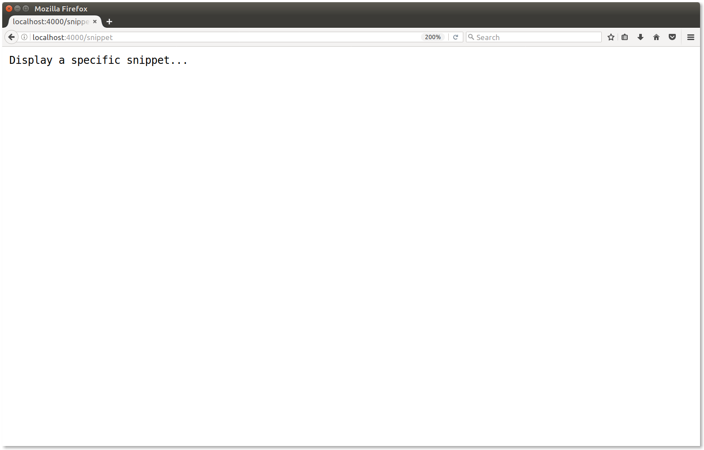
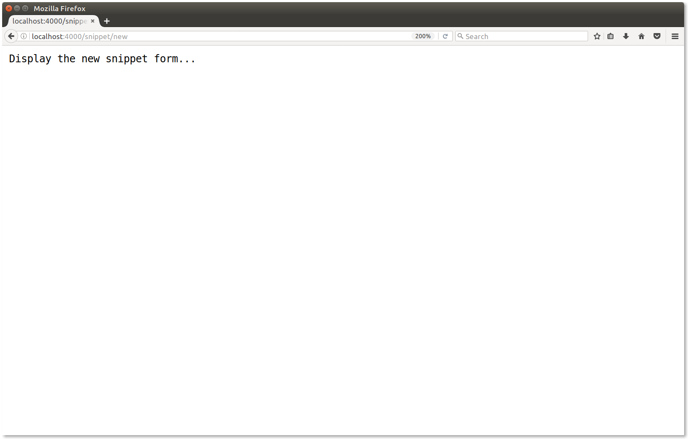

2.5. Routing Requests
Now let's concentrate on adding a couple of new routes to our Snippetbox web application, so that it looks like this:
| URL Path | Handler | Action |
|---|---|---|
| / | Home | Display a "Hello from Snippetbox" message |
| /snippet | ShowSnippet | Display a specific snippet |
| /snippet/new | NewSnippet | Display the new snippet form |
First, open up the handlers.go file and add a pair of placeholder functions for ShowSnippet and NewSnippet:
package main import ( "net/http" ) func Home(w http.ResponseWriter, r *http.Request) { if r.URL.Path != "/" { http.NotFound(w, r) return } w.Write([]byte("Hello from Snippetbox")) } // Add a placeholder ShowSnippet handler function. func ShowSnippet(w http.ResponseWriter, r *http.Request) { w.Write([]byte("Display a specific snippet...")) } // Add a placeholder NewSnippet handler function. func NewSnippet(w http.ResponseWriter, r *http.Request) { w.Write([]byte("Display the new snippet form...")) }
And then register them with our serve mux, in exactly the same way as we did with the first route:
package main import ( "log" "net/http" ) func main() { // Register the two new routes with the serve mux. Again, notice how we use // the http.HandlerFunc() adapter to convert the two functions to handlers? mux := http.NewServeMux() mux.HandleFunc("/", Home) mux.HandleFunc("/snippet", ShowSnippet) mux.HandleFunc("/snippet/new", NewSnippet) log.Println("Starting server on :4000") err := http.ListenAndServe(":4000", mux) log.Fatal(err) }
Make sure that both files are saved, and restart the web application:
$ $HOME/go/src/snippetbox.org $ go run cmd/web/* 2017/08/17 18:32:04 Starting server on :4000
If you visit [the following links in your browser you should now get the appropriate response for each route, looking a bit like the screenshots below:


Fixed Paths and Subtrees
Our two new routes – "/snippet" and "/snippet/new" – are both examples of fixed paths because they don't end in a trailing slash. In Go's serve mux, fixed path patterns like these are only matched (and the corresponding handler called) when the request URL path exactly matches the fixed path.
Go's serve mux also supports subtree paths, which do end with a trailing slash. An example of a subtree path is something like "/static/". Subtree path patterns are matched (and the corresponding handler called) whenever the start of a request URL path matches the subtree path. If it helps your understanding, you can think of subtree paths as acting a bit like they have a wildcard at the end, like "/static/**".
This helps explain why our "/" pattern was acting like a catch-all. The pattern is a subtree path (because it ends in a trailing slash) so it essentially means match a single slash, followed by anything (or nothing at all).
I should also mention that Go's serve mux gives longer patterns precedence over shorter ones. If a serve mux contains multiple patterns which match a request, it will always dispatch the request to the handler with the longest pattern.
The Default Serve Mux
As an aside, you might have read or watched other tutorials which use the http.Handle() and http.HandleFunc() functions to declare their routes.
Both these functions register routes with the default serve mux. There's nothing special about the default serve mux. It's just regular serve mux like we've already been using, which is initialized by default and stored in a net/http global variable. Here's the relevant line from the Go source code:
var DefaultServeMux = NewServeMux()
I've avoided using this in our application because it poses a security risk.
Because the default serve mux is stored in a global variable, any package is able to access it and register a route – including any third-party packages that your application imports. If one of those third-party packages is compromised, they could use the default serve mux to expose a malicious handler to the web.
So as a rule of thumb it's a good idea to avoid the default serve mux. Use your own locally-scoped serve mux instead, like we have been so far.
Notes
Third-Party Routers
The functionality that Go's serve mux provides is pretty basic. It doesn't support routing based on the request method, it doesn't support regexp-based patterns, and it doesn't support semantic URLs with variables in them. If you're coming from a background of using frameworks like Rails, Django or Laravel you might find this a bit restrictive... and surprising!
But the reality is that Go's serve mux can still get you quite far, and for many applications it's perfectly sufficient. For the times that you need more, there's a huge choice of third-party routers that you can use. We'll take a look at these later in the book.
Domain Matching
It's possible to include host names in your route patterns. For example, the route below will only match if the request host and path is exactly www.example.org/foo:
mux := http.NewServeMux() mux.HandleFunc("www.example.org/foo", FooHandler)